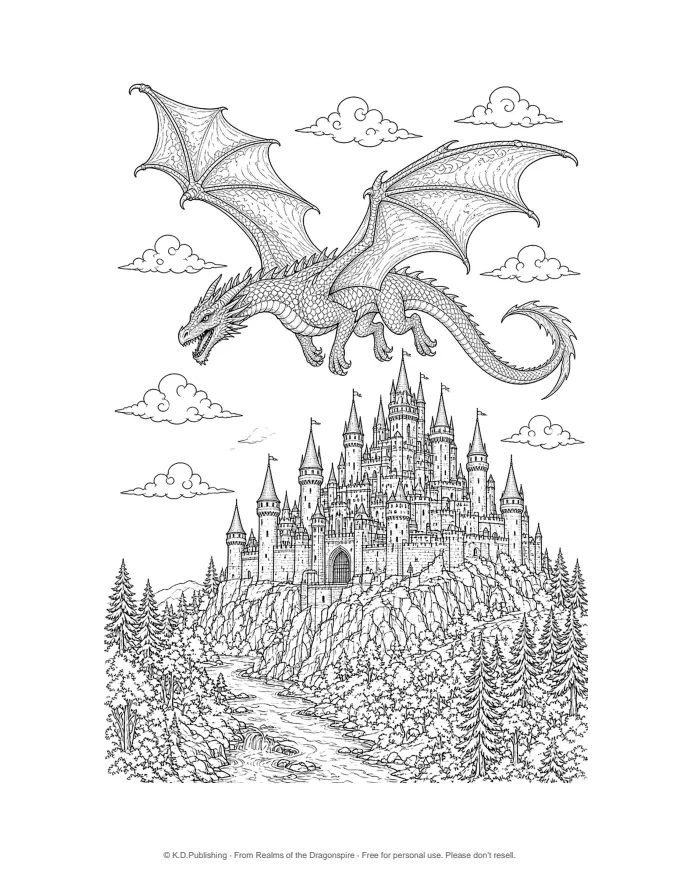
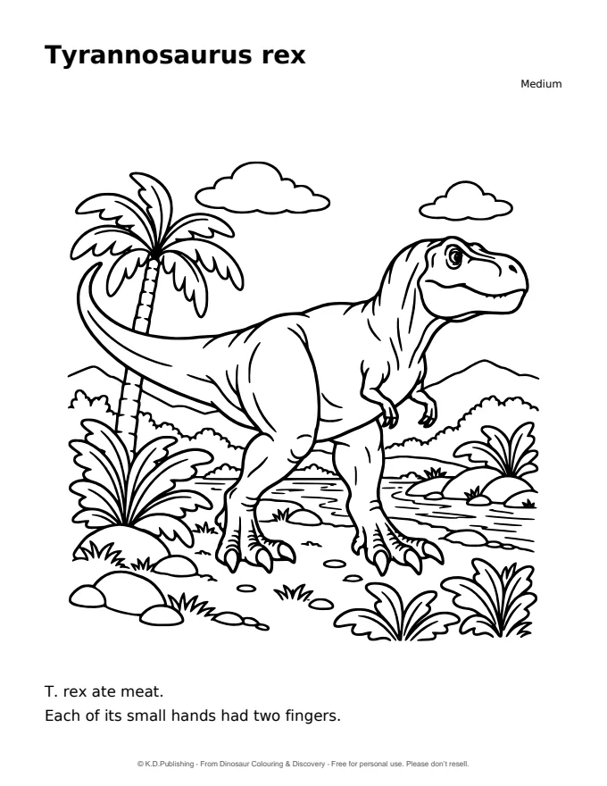

Free printable colouring pages
Download a real page from one of our colouring books, print it at home and start colouring.

A dragon over the castle
A winged dragon soars above a many-towered castle, forest and winding river. Fine detail for adult colourists.
Page 51 of Realms of the Dragonspire, taken from the finished book interior.
PDF · 805 KB · Single-sided US Letter page (8.5 × 11 in) with high-resolution (about 300 ppi) line art. On A4 paper, choose “Fit to page” when printing.
Tyrannosaurus rex
A friendly T. rex among palm trees and ferns, with two short facts to share. Made for children ages 4–7.
Page 59 of Dinosaur Colouring & Discovery, taken from the finished book interior.
PDF · 124 KB · Single-sided US Letter page (8.5 × 11 in) with vector line art. On A4 paper, choose “Fit to page” when printing.Using these pages
Free for personal use. Please don’t resell. Print as many copies as you like for yourself, your family or your classroom; please share a link to this page rather than uploading the files elsewhere.
© K.D.Publishing. Each page comes from the finished paperback interior; Amazon handles book orders, prices and availability.